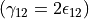
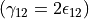
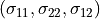
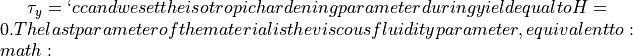
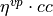
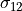

2.3. Viscoplastity Application 3:¶
In this application we will study the shear strain response of the viscoplastic layer during strain localization. In order to provoke strain localization inside the Cauchy viscous layer, we will intorduce a material imperfection. It has been already discussed in the literature that strain localization takes place in the presence of strain softening. It has been proven that in the case of a Cauchy elastoplastic layer strain softening is responsible for mesh dependence in the numerical finite element analysis, in that strain will localize in the smallest possible mesh dimension inside the domain, which for the analysis results discussed here, corresponds to the smallest finite element dimension.
When elasto-viscoplasticity is taken into account with strain softening and strain rate hardening under quasistatic conditions it has been proven in cite(Stefanou) that the analyses remain mesh independent. However, in this case, the width of strain localization will be given by the initial supplied imperfection to the doamain. In this tutorial we will use Numerical Geolab to perform analysis with a Cauchy elasto-viscoplastic strain softening, strain-rate hardening material and two different imperfection widths, in order to verify the material behavior and the localization width.
The file for this tutorial can be found in:
ngeoFE_unittests.Mechanics.Cauchy.TwoD.BVP.Cauchy2D_Von_Mises_Perzyna_App_3
We provide here the description of the input file for the imperfection analysis and explain the basic steps.
2.3.1. Begining of file¶
The file begins as follows:
from dolfin import *
import time
import numpy as np
from ngeoFE.feproblem import UserFEproblem, General_FEproblem_properties
from ngeoFE.fedefinitions import FEformulation
from ngeoFE_unittests import ngeo_parameters
from ngeoFE_unittests import plotting_params
import os # allows for easier handling of paths
from _operator import itemgetter # allows for transformation of lists to iterables, usefull for the definition of boundary conditions
2.3.2. Finite element formulation¶
We do this by specifying the number of vector components for the test function, the interpolation function used inside the element and the number Gauss points present in the element for the integral evaluation of the weak form.
class Cauchy2DFEformulation(FEformulation):
'''
Defines a user FE formulation
'''
def __init__(self):
# Number of stress/deformation components
self.p_nstr=3
# Number of Gauss points
self.ns=1
def generalized_epsilon(self,v):
"""
Set user's generalized deformation vector
"""
gde=[
Dx(v[0],0), #gamma_11
Dx(v[1],1), #gamma_11
Dx(v[0],1)+Dx(v[1],0) #gamma_12
]
return as_vector(gde)
def create_element(self,cell):
"""
Set desired element
"""
# Defines a Lagrangian FE of degree 1 for the displacements
element_disp=VectorElement("Lagrange",cell,degree=1,dim=2)
return element_disp
 used for the equilibrium equations are needed.
We note also that we provide the Voigt notation for the unknown strains of the problem, therefore, the engineering strain notation for the shear strain needs to be used .
used for the equilibrium equations are needed.
We note also that we provide the Voigt notation for the unknown strains of the problem, therefore, the engineering strain notation for the shear strain needs to be used .In code snippet above, we provide the finite element formulation for the problem at hand. The class is initialized with 3 strain components and 1 Gauss point. The python function:
- generalized_epsilon(v)¶
- create_element(cell)¶
We note here that the VectorElelement() class indicates that the components of the function space for each vector component are the same.
2.3.2.1. Boundary identification¶
We proceed now by identifying the boundaries needed for the application of the boundary conditions at a later stage of the modeling procedure. We make use of the SubDomain() parent class inside dolfin:
- class SuDomain(x, on_boundary)¶
We create four subclasses (children) of the class, each for each side of the rectangular domain, which inherit from it the spatial variable (x) and the boundary identification flag (on_boundary) and the method
- inside(x, on_boundary)¶
The subclasses are defined as follows:
class left(SubDomain):
def inside(self,x,on_boundary):
return x[0] < 0 and on_boundary
class right(SubDomain):
def inside(self, x, on_boundary):
return x[0] > 0 and on_boundary
class top(SubDomain):
def inside(self,x,on_boundary):
return x[1] > 0 and on_boundary
class bottom(SubDomain):
def inside(self, x, on_boundary):
return x[1] < 0 and on_boundary
Inside each subclass we define the logical test for assigning the specific boundary node in one of the boundary regions, where the boundary conditions will be applied.
The value x[i] indicates the spatial coordinate  of the problem at hand.
of the problem at hand.
2.3.2.2. Finite element problem description¶
In this application we opt to showcase the efficiency of Numerical Geolab in performing parametric analyses, for different characteristics of the model.
More specifically, in this applications we will show how the choice of the imperfection width affects the elasto-viscoplastic response of the specimen. Furthermore, we
will show numericaly that the specimen’s response under quasistatic analysis conditions with strain softening and strain rate hardening is mesh independent.
We will use the imperfection thickness as an independent parameter to be specified by the user during the instantiation of the Cauchy2DFEproblem(UserFEproblem) class
(defintion of the finite element problem).
Cauchy2DFEproblem(UserFEproblem).class Cauchy2DFEproblem(UserFEproblem):
"""
Defines a user FE problem for given FE formulation
"""
def __init__(self,FEformulation,imp):
self.description="Example of 2D plane strain problem, Cauchy continuum"
self.problem_step=0
self.h = 1.
self.w = 0.2
self.imp=imp
super().__init__(FEformulation)
In the class __init__() method, the finite element formulation defined above is provided as argument.The geometric dimensions of the problem are also specified Its height self.h=1. and its width self.w=0.2 . The initialization then proceeds to set up all the methods of the parentclass UserFEproblem(). The methods inside the class are defined by overriding the methods inside the parent class.
def set_general_properties(self):
"""
Set here all the parameters of the problem, except material properties
"""
self.genprops=General_FEproblem_properties()
# Number of state variables
self.genprops.p_nsvars=38
This method is used to provide the number of state variables of the material. In this tutorial only the mechanical behavior is important and therefore, the state of material is described by the increment of stress, total strain, elastic strain, plastic strain, plastic strain multiplier and plastic strain rate. Notice that even though the problem is in 2D and three strain components (and consequently three stress components) are needed for the description of equilibrium the state of the material contains the information also for the rest components of the general 3D problem. For each material used by the Numerical Geolab, the number of state variable components is given in Table (To be referenced).
For this simple geometry the capabilities of dolfin can be used to define a rectangular mesh specifying the bottom left and upper right corners of the rectangular domain.
def create_mesh(self):
"""
Set mesh and subdomains
"""
# Generate mesh
h=self.h
w=self.w
nx=200
ny=1
mesh = RectangleMesh(Point(-h/2.,-w/2.),Point(h/2.,w/2.),nx,ny,"left")#"crossed")
#print(mesh.topology().dim())
cd=MeshFunction("size_t", mesh, mesh.topology().dim())
fd=MeshFunction("size_t", mesh, mesh.topology().dim()-1)
return mesh,cd,fd
For the domain at hand we specify a discretization with nx=80 elements along the x[0] component and ny=1 element along the x[1] component. The MeshFunction() method of dolfin is used to provide the mesh object, the interior domain and the boundary domains. The following model is the produced:
Fig. 2.3.1 Image of the rectangular mesh produced by RectangleMesh(). The domain was exported with the help of the third party software Paravew.¶
2.3.2.2.1. Defining subdomains of interest: Imperfection and Gauss points querry domains¶
In this application we need to show the effect of the imprefection thickness on the localization width of the specimen and its elasto-viscoplastic response.
We will also show that the response of the specimen during shearing under quasistatic conditions with strain softening and strain rate hardening remains mesh independent, in the sense that
all the element inside the imperfection band exhibit uniform strain, which is greater that the zero strain outside the imperfection domain. For this
we need to make both the Imperfection and the Gauss point querry domains dependent on the imperfection size previously defined as a parameter.
In this case we will define the Imperfection() and Gauss_point_Querry() classes inside the problem definition
and we will provide the imperfection attribute already provided during the instantiation of the problem.
2.3.2.2.1.1. Imperfection definition¶
- In order to facilitate strain localization inside the medium we will introduce a material imperfection inside the domain. Again we will make use of the
SubDomain()parent class in order to define a new region, where the new material parameters will be defined. We choose to apply the material imperfection in the middle of the layer as a centered interval around the x[0]=0 value.
class Imperfection(SubDomain):
"""
Sets an imperfection
"""
def __init__(self,imp):
self.imp=imp
SubDomain.__init__(self)
def inside(self, x, on_boundary):
return between(x[0], (-self.imp, self.imp))
2.3.2.2.1.2. Monitoring stress and state variables at the Gauss points¶
In this application we will present a way to extract state variable quantities from the Gauss points of the Finite element model. This is done again by application of the :py:class`SubDomain()` class in order to define a region, in which the Gauss points are monitored. The following code defines a centered interval in the middle of the layer surrounding the applied imperfection:
class Gauss_point_Querry(SubDomain):
def __init__(self,imp):
self.imp=imp
SubDomain.__init__(self)
def inside(self, x, on_boundary):
return between(x[0], (-2.*self.imp, 2.*self.imp))
2.3.2.2.2. Assignment of the material properties¶
def create_subdomains(self,mesh):
"""
Create subdomains by marking regions
"""
subdomains = MeshFunction("size_t", mesh, mesh.topology().dim())
subdomains.set_all(0) #assigns material/props number 0 everywhere
imperfection = self.Imperfection(self.imp)
imperfection.mark(subdomains, 1)
return subdomains
In this tutorial the finite element domain is divided in two different regions according to the imperfection domain and its complementary set. In order to do this,
we make use of the MeshFunction() function of the dolfin module. This function can take as argument the domain it is applied and the topological dimention of the entities it refers to.
Here, it is defined on the whole mesh and for all cells inside the mesh. MeshFunction() applies a label to each element it refers to. The label can be any alphanumeric value when the keyword ‘size_t’ is provided during the function call.
In this example we set the labels of all cells inside the problem domain equal to zero initially. Then me mark the cells that overlap with the imperfection definition with the label 1.
The numbers 0 and 1 used in the labels, indicate which material parameters are needed to be taken into account in each mesh region (see the corresponding method set_material_params()).
Warning
IMPORTANT We need also to initialize the Gauss point monitoring subdomain, when state variable output is needed. We use the same method as in the case of material definition based onthe FEniCs software:
def create_Gauss_point_querry_domain(self,mesh):
"""
Create subdomains by marking regions
"""
GaussDomain = MeshFunction("size_t", mesh, mesh.topology().dim())
GaussDomain.set_all(0) #assigns Gauss region number 0 everywhere
GaussDomainQuerry= Gauss_point_Querry()
GaussDomainQuerry.mark(GaussDomain,1) # marks the Gauss region be applying the number 1 at the selected nodes.
return GaussDomain
We note here that the Gauss point definition is done on the cells of the Finite Element mesh and not on the boundary facets. This is done because the Gauss points are on the
interior of the domain and use of the nodal selection algorithm inside the Numerical Geolab module ngeoFE.feproblem
(see method ngeoFE.feproblem.UserFEobject.set_history_output_indices())
returns an empty set. The method ngeoFE.feproblem.UserFEobject.set_svars_history_output_indices() needs to be called -internally- instead.
We do so by assigning the numbers 1 to 4 to the different regions of the model. To do this we use the method mark() from the SubDomain() class of dolfin.
def mark_boundaries(self,boundaries):
"""
Mark left and right boundary points
"""
boundaries.set_all(0)
left0=left()
left0.mark(boundaries,1)
right0=right()
right0.mark(boundaries,2)
top0=top()
top0.mark(boundaries,3)
bottom0=bottom()
bottom0.mark(boundaries,4)
return
We are now able to identify the boundaries of the mesh and assign different boundary condition to each side of the boundary. The way we apply the boundary conditions can be seen in the method:
- set_bcs()¶
def set_bcs(self):
"""
Set boundary conditions for the user problem / could be replaced by external mesher, e.g. Abaqus, Gmsh...
"""
if self.problem_step == 0:
bcs=[
[2,[0, [1],0.1]],
[1,[0, [1],0]],
[4,[0, [0],0]],
[3,[0, [0],0]]
]
elif self.problem_step != 0:
bcs=[
[2,[0, [1],0.1]],
[1,[0, [1],0]],
[4,[0, [0],0.0]],
[3,[0, [0],0.0]]
]
return bcs
Inside this method the boundaries are assigned with the use of a nested list. Dirichlet, Neuman and Robin boundary conditions can be applied both incrementaly and instantaneously. The boundary conditions can be assigned to a boundary region or pointwise.
In this example, the region id ranges from 1 to 4 indicating the left, right,top and bottom regions of the boundaries. The type of boundary condition for the left boundary is set to 0, specifying incremental Dirichlet boundary condition. The vector component shows which component of the 2D displacement vector is to be affected and value indicates the value of the boundary condition to be set at the specific boundary. Here, we set at the left boundary (label 2), the value of the incremental Dirichlet condition (type 0), for the vertical displacement component v[1] (parallel to x[1]) equal to 0.1.
Numerical Geolab offers the user the capability of extracting the output at the nodes and regions of the boundary at the converged increments of the numerical analysis. This capability is given to the user in order to obtain the specific nodal output of the solution (forces, displacements) instead of using the interpolated results provided in a separate .vtk file for postprocessing with a third party software (e.g. Paraview). The history output at the nodes can be given by:
def history_output(self):
"""
Used to get output of residual at selected node
"""
hist=[[2,[1,[1]]],
[2,[0,[1]]],
]
return hist
The node specification works the same way as in set_bcs(). In this example we choose the right edge of the boundary (2) in order to monitor the second component ([1]) of the force (1) and displacement (0) fields respectively.
We assign next the components of the state variables that need to be monitored at the specific Gauss points
def history_svars_output(self):
"""
Used to get output of svars at selected Gauss point
"""
hist_svars=[[1,[1,[18]]], #Calculate total shear strain
[1,[1,[21]]]] #Calculate elastoviscoplastic multiplier
return hist_svars
The Gauss point specification works the same way as in set_bcs() and history_output(). In this example in the region (1) defined by the
method create_Gauss_point_querry_domain(), we choose to monitor the vector component 21, which translates
to the elasto-visco-plastic multiplier  . The mapping between VectorSpace and state variable components is given in the state variables material description
(see reference needed).
. The mapping between VectorSpace and state variable components is given in the state variables material description
(see reference needed).
2.3.2.3. Material specification¶
Next, we define the analysis material that we have already assigned in the create_subdomains() method. Here we also need to provide the material values for the imperfection. Here, we choose the yield limit at the imperfection to be slightly lower that that of the surrounding domain.
def set_materials(self):
"""
Create material objects and set material parameters
"""
mats=[]
# load material #1
env_lib=ngeo_parameters.env_lib
umat_lib_path= ngeo_parameters.umat_lib_path
umat_lib = umat_lib_path+'/CAUCHY3D-DP/libplast_Cauchy3D-DP.so'
umat_id=2 # if many materials exist in the same library
mat=UserMaterial(env_lib,umat_lib,umat_id)
mat.props=self.set_material_1_properties(2000.,0.,100.,0.,1./100.)
#
mats.append(mat)
#material at the imperfections
mat=UserMaterial(env_lib,umat_lib,umat_id)
mat.props=self.set_material_1_properties(2000.,0.,100.-0.5,0.,1./100.)
#
mats.append(mat)
return mats
The ngeoFE_unittests.ngeo_parameters module contains the relative path to the materials libraries, which specify the different materials available to the user.
The variable umat_id=2 needs to be set for the 2D analyses performed here.
It specifies the mapping of the updated vector components of the strain increment and corresponding tensor components of the constitutive matrix , with their position in the 3D strain vector and 3D constitutive matrix provided at the material subroutine (material algorithm).
This mapping returns back the correct components of the stress vector and constitutive matrix to pass into the residual calculation of the weak form the UFL form language interprets inside the dolfin software,
at each equilibrium iteration. The material properties passed into the material algorithm, are set with the helper method:
def set_material_1_properties(self,EE,nu,cc,H,eta_vp):
"""
Sets material parameters
"""
GG=EE/(2.*(1.+nu)) #Shear modulus
KK=EE*GG/(3.*(3.*GG-EE)) #Isotropic compression modulus
props=np.zeros(19)
props[1-1]=KK
props[2-1]=GG
props[12-1]=cc
props[15-1]=H
props[19-1]=eta_vp*cc
props=props.astype("double")
return props
We specify the material’s elastic parameters using the material young modulus EE and Poisson ratio nu, however, the material description numerical geolab employs, makes use of the isotropic compression modulus KK and the shear modulus GG. Therefore, a transformation of the elastic constants is needed. The material used in this application is elastic visco plastic with a viscous fuidity parameter (Perzyna viscoplasticity). We specify the material yield strength in simple shear eta^{vp}=0.01`.
The elastic constants (GG, KK) used together with the material hardening parameter, H, and the viscosity parameter 
and their position in the material properties (numpy array props), can be found in Table (reference needed) and the material library files that accompany Numerical Geolab.
2.3.3. Analysis excecution and postprocessing¶
Our model is now set and ready to run. In this application we will perform a parametric imperfection analysis in order to test the effect of the size of the material imperfection in the slope of the post yielding branch of the analysis. Using the class Cauchy2DFEproblem(UserFEproblem) we will create a finite element proble object (myFEproblem). In order to fascilitate the analysis we will add a set of methods to the Cauchy2DFEproblem(UserFEproblem) class. These methods will provide the parameters of the solution procedure including the analysis total time and a set of plotting and postprocessing tools.
2.3.3.1. Controling the analysis time¶
The following code block provides the solver parameters inclusing the step total analysis time, the maximum time increment, the tolerance of the converged increment and the maximum number of increments.
def give_me_solver_params(self,scale_t=1.):
self.scale_t = scale_t
self.slv.incmodulo = 1
self.slv.dtmax=0.1*self.scale_t
self.slv.tmax=1.*scale_t
ninc=int(self.slv.tmax/self.slv.dtmax)
self.slv.nincmax=1000000
self.slv.convergence_tol=10**-6
self.slv.removezerolines=False
The parameter py:param:scale_t controls the overall time increment and total time of the analysis. We specify it as an attribute of the calss so that it can be called by the other analysis procedure method. To avoid confusion with the problem description we choose not to incorporate it as an argument to be passed at the level of the problem definition. Next, the main part of the analysis follows. This method specifies the boundary conditions to be applied at each step of the analysis and the total time of eaxh analysis step.
def run_analysis_procedure(self,reference_data_path):
saveto=reference_data_path+"./Cauchy_2D_Von_Mises_test_step_0_App_2_vp.xdmf"
self.problem_step = 0
self.bcs=self.set_bcs()
self.feobj.symbolic_bcs = sorted(self.bcs, key=itemgetter(1))
print("initial")
converged=self.solve(saveto,summary=True)
scale_t_program = [self.scale_t,self.scale_t]
print("shearing1")
nsteps=2 #number of subsequent shearing steps.
for i in range(nsteps):
self.problem_step = i+1
scale_t = scale_t_program[i]
self.slv.nincmax=1000000
self.slv.dtmax=0.1*scale_t
self.slv.dt=self.slv.dtmax
self.slv.tmax=self.slv.tmax+1.*scale_t
self.feobj.symbolic_bcs = sorted(self.set_bcs(), key = itemgetter(1)) # Provide the list of boundary conditions
self.feobj.initBCs() #The new boundary conditions need to be initialised
filename = 'Cauchy_2D_Von_Mises_test_step_'+str(i+1)+'_App_2_vp'
saveto= reference_data_path+filename+".xdmf"
converged=self.solve(saveto,summary=True)
return converged
We note that in the above code the internal loop indicates that that analysis consists of five different steps. The maximum number of increments for each step is set to ninc=100000.
2.3.4. Postprocessing the results¶
Next, we focus on extracting the results from the history matrices stored during the analysis. The methods of history_unpack() and svars_history_unpack() help us unpack the nesed lists of the boundary nodal quantities and the state variables at the quadrature points respectively. In this examples the structure of the nodal history list and that of the history list at the quadrature points is the same. The history list is a nested list, whose elements have the following structure:
|[[time, [force node 1, force node 2], [displacement node 1, displacement node2]], |… |,[[time, [force node 1, force node 2], [displacement node 1, displacement node2]]]
def history_unpack(self,list1):
for i,elem in enumerate(list1):
if i==0:
self.array_time=np.array([[elem[0]]])
self.array_force=elem[1].reshape((1,len(elem[1])))
self.array_disp=elem[2].reshape((1,len(elem[2])))
continue
self.array_time=np.concatenate((self.array_time.copy(),np.array([[elem[0]]])))
self.array_force=np.concatenate((self.array_force.copy(),elem[1].reshape((1,len(elem[1])))))
self.array_disp=np.concatenate((self.array_disp.copy(),elem[2].reshape((1,len(elem[2])))))
def svars_history_unpack(self,list1):
for i,elem in enumerate(list1):
if i==0:
self.array_dtime=np.array([[elem[0]]])
self.array_gp_svars_comp=elem[1].reshape((1,len(elem[1])))
continue
self.array_dtime=np.concatenate((self.array_dtime.copy(),np.array([[elem[0]]])))
self.array_gp_svars_comp=np.concatenate((self.array_gp_svars_comp.copy(),elem[1].reshape((1,len(elem[1])))))
The extraction functions that return the numpy arrays of the nodal and state variable quantities at the monitored regions are the following:
- extract_force_disp(self)¶
- extract_svars_gauss_point(self)¶
The first method extracts the nodal displacement at the end nodes, and the stress tensor at the boundary of the domain.
def extract_force_disp(self):
analysis_history=self.feobj.problem_history
self.history_unpack(analysis_history)
self.array_time=self.array_time[:].copy()
self.array_force=self.array_force[:].copy().sum(axis=1)/self.w
self.array_force=self.array_force.reshape((-1,1))
self.array_disp=self.array_disp[:,1].reshape((-1,1)).copy()
The second method extracts the state variable component from the Gauss points in question.
def extract_svars_gauss_point(self):
analysis_svars_history=self.feobj.problem_svars_history
self.svars_history_unpack(analysis_svars_history)
self.array_dtime=self.array_dtime[:].copy()
self.array_gp_svars_comp=self.array_gp_svars_comp[:].copy()
2.3.5. Application of analysis procedure and postprocessing of numerical results¶
The following code block performs the analyses of the two numerical models and the postprocessing of the results.
#model 1 run analysis procedure
imperfection1=0.1
my_FEproblem1=Cauchy2DFEproblem(cls.my_FEformulation, imperfection1=0.1)
my_FEproblem1.give_me_solver_params(scale_t=10e-4)
converged1=my_FEproblem1.run_analysis_procedure(reference_data_path)
my_FEproblem2=Cauchy2DFEproblem(cls.my_FEformulation, imperfection2=0.05)
my_FEproblem2.give_me_solver_params(scale_t=10e-4)
converged2=my_FEproblem2.run_analysis_procedure(reference_data_path)
After the analysis has finished we perform extraction of the results
self.my_FEproblem1.extract_force_disp()
values_time1 = self.my_FEproblem1.array_time
values_force1 = self.my_FEproblem1.array_force
values_disp1 = self.my_FEproblem1.array_disp
self.my_FEproblem2.extract_force_disp()
values_time2 = self.my_FEproblem2.array_time
values_force2 = self.my_FEproblem2.array_force
values_disp2 = self.my_FEproblem2.array_disp
The values of plastic strain rate, the material parameters at the yield strength at the Gauss points are also retrived via the method
extract_svars_gauss_point():
self.my_FEproblem1.extract_force_disp()
self.my_FEproblem1.extract_svars_gauss_point()
gamma_dot_vp_1=np.divide(self.my_FEproblem1.array_gp_svars_comp,self.my_FEproblem1.array_dtime)
cc=self.my_FEproblem1.mats[-1].props[11]
etavp=self.my_FEproblem1.mats[-1].props[18]/cc
tau_yield_anal_1=cc+etavp*cc*gamma_dot_vp_1 #evolution of elastovisoplastic strength during shearing
2.3.5.1. Plotting the analysis values¶
We will plot the shear stress values at the free surface of the layer with respect to time, for the two values of imperfection size.
To do so we take advantage of the plotting capabilities of Numerical Geolab available in ngeoFE_unittests.plotting_params.
We can plot the stress at each problem w,r.t to time:
x1=list(values_time1[:].copy())
y1=list(-values_force1[:].copy())
x1.insert(0,0)
y1.insert(0,0)
x2=list(values_time2[:].copy())
y2=list(-values_force2[:].copy())
x2.insert(0,0)
y2.insert(0,0)
fig, ax1, color1 = plotting_params.object_plot_axes('$t$ [s]', y1_txt='$\sigma$ [kPa]',color1='k',y2_txt='$\sigma$ [kPa]',color2='', title='',mode='1')
plotting_params.object_plot(x1, y1,y2, ax1, 'ax2',x2, mode='3',color1='r',color2='b',label_string='')
plotting_params.show_plot()
plotting_params.plot_legends(ngeo_parameters.reference_data_path, fig, filename='Cauchy_3D_Perzyna_visoplasticity_App_3_sigma_t',mode='1')
We can plot the stress at each problem w.r.t to displacement:
x1=list(values_disp1[:].copy())
y1=list(-values_force1[:].copy())
x1.insert(0,0)
y1.insert(0,0)
x2=list(values_disp2[:].copy())
y2=list(-values_force2[:].copy())
x2.insert(0,0)
y2.insert(0,0)
fig, ax1, color1 = plotting_params.object_plot_axes('$u$ [mm]', y1_txt='$\sigma$ [kPa]',color1='k',y2_txt='$\sigma$ [kPa]',color2='', title='',mode='1')
plotting_params.object_plot(x1, y1,y2, ax1, "ax2",x2, mode='3',color1='g',color2='c',label_string='')
plotting_params.show_plot()
plotting_params.plot_legends(ngeo_parameters.reference_data_path, fig, filename='Cauchy_3D_Perzyna_visoplasticity_App_3_sigma_u',mode='1')
The comparative results of stress w.r.t time and displacement response for the two models of uniform shear are shown in Figure 1 respectively:
Fig. 2.3.2 Elastoviscoplastic loading diagram (shear stress  [MPa], time |
Fig. 2.3.3 Elastoviscoplastic loading diagram (shear stress [MPa], displacement |
 [s]) at the free end of the layer.
We note that the response differs depending on the imperfection width, namely the slope is greater for the smaller imperfection size.
The slope of the elasto-viscoplastic diagram is inversely proportional to the size of the imperfection.
[s]) at the free end of the layer.
We note that the response differs depending on the imperfection width, namely the slope is greater for the smaller imperfection size.
The slope of the elasto-viscoplastic diagram is inversely proportional to the size of the imperfection. [mm]) at the free end of the layer.
We note that the response differs depending on the imperfection width, namely the slope is greater for the smaller imperfection size.
The slope of the elasto-viscoplastic diagram is inversely proportional to the size of the imperfection.
[mm]) at the free end of the layer.
We note that the response differs depending on the imperfection width, namely the slope is greater for the smaller imperfection size.
The slope of the elasto-viscoplastic diagram is inversely proportional to the size of the imperfection.{kind=link}
{kind=link}
{kind=link}
The profiles of the plastic strain at the end of the analyses for the two different imperfection widths are presented in the following Figure 2:
Fig. 2.3.4 Deformation profile indicating strain localization at the imperfection size for the first analysis with imperfection size 0.1 mm.¶ |
Fig. 2.3.5 Deformation profile indicating strain localization at the imperfection size for the second analysis with imperfection size 0.05 mm.¶ |
{kind=link}
{kind=link}
{kind=link}
Fig. 2.3.6 Comparizon of the profiles of the plastic strain rate (elasto-viscoplastic multiplier) for the two analyses with different imperfections. We note that strain localization takes place at the size of the imperfection region as expected. The imperfection does not localize on the smallest possible mesh dimension here (1/200 [mm]) indicating that the analyses are mesh independent. However, the localization width is selected by the user when the imperfection width is specified and is not a characyteristic of the material.¶